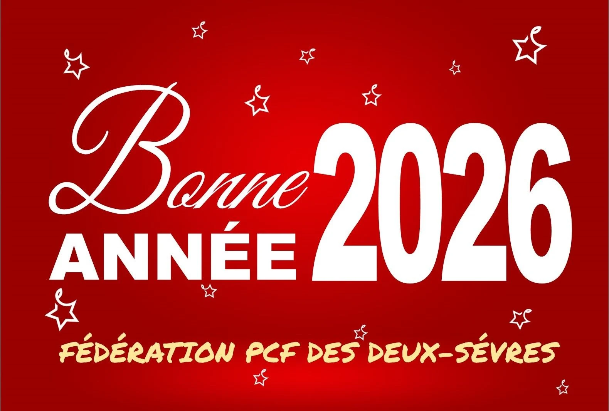

Vœux de la fédération
Bonne année 2026 de la part du PCF des Deux-Sèvres
Date indiquée par Facebook · 31 décembre 2025
Repères éditoriaux
Nous avons adressé nos vœux pour 2026 aux habitantes et habitants des Deux-Sèvres. La carte porte les mots « Bonne année 2026 » et la signature de notre fédération.

Sources
Archive rouge · document diffusé sur Facebook · AR-0002-FB-00920
À lire aussi · Nous rendons hommage à notre camarade Jean François Christé